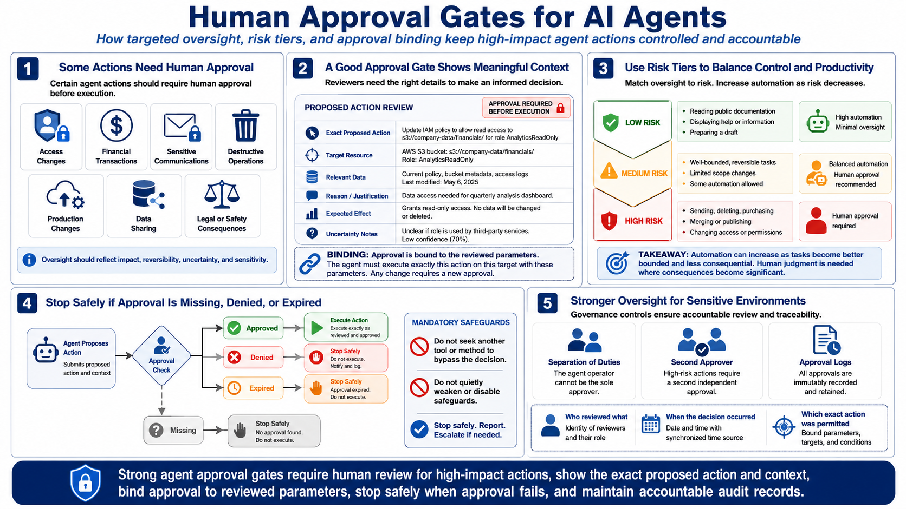

Defending Against Agent Abuse
Human Oversight and Approval Gates
Connecting to LMS... Progress: in progress
Version 1.0 | Date: 2026-06-21
This course provides educational information regarding defensive security controls for AI agents. It is not offensive security training, exploit development instruction, or legal advice.

Narration
Certain agent actions should require human approval before execution. Examples include access changes, financial transactions, sensitive communications, destructive operations, production changes, data sharing, or actions with legal or safety consequences. The required oversight should reflect the impact, reversibility, uncertainty, and sensitivity of the resource involved.
An approval gate should provide meaningful context rather than a generic confirmation. The reviewer should see the exact proposed action, target, relevant data, reason, expected effect, and any important uncertainty. Approval must occur before execution, and the system should bind it to the reviewed parameters so the agent cannot silently substitute a different action afterward.
Risk tiers help balance control with productivity. Reading public documentation, displaying help, or preparing a draft may not need the same review as sending, deleting, purchasing, merging, or changing access. Organizations can automate well-bounded, reversible tasks while placing deliberate human judgment at transitions where consequences become significant.
If approval is missing, denied, or expired, the workflow should stop safely. It should not seek another tool to bypass the decision or quietly reduce safeguards. Highly sensitive environments may require separation of duties or a second approver. Approval logs should record who reviewed what, when the decision occurred, and which exact action was permitted.